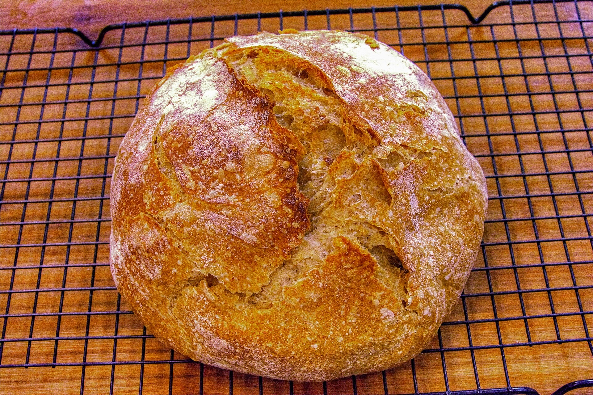
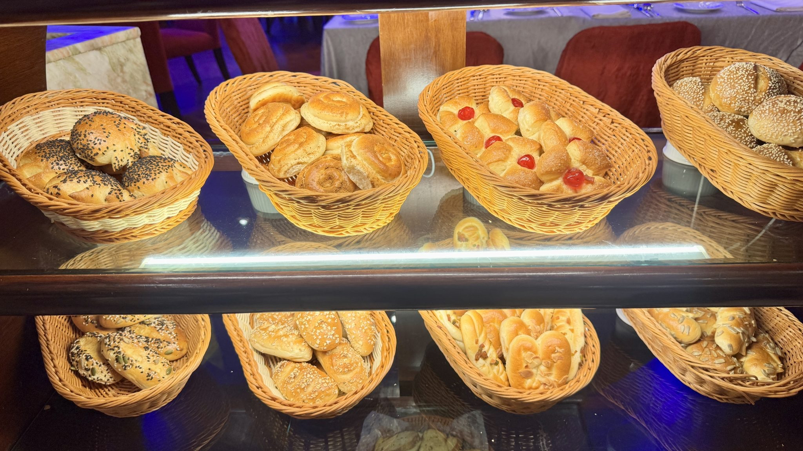
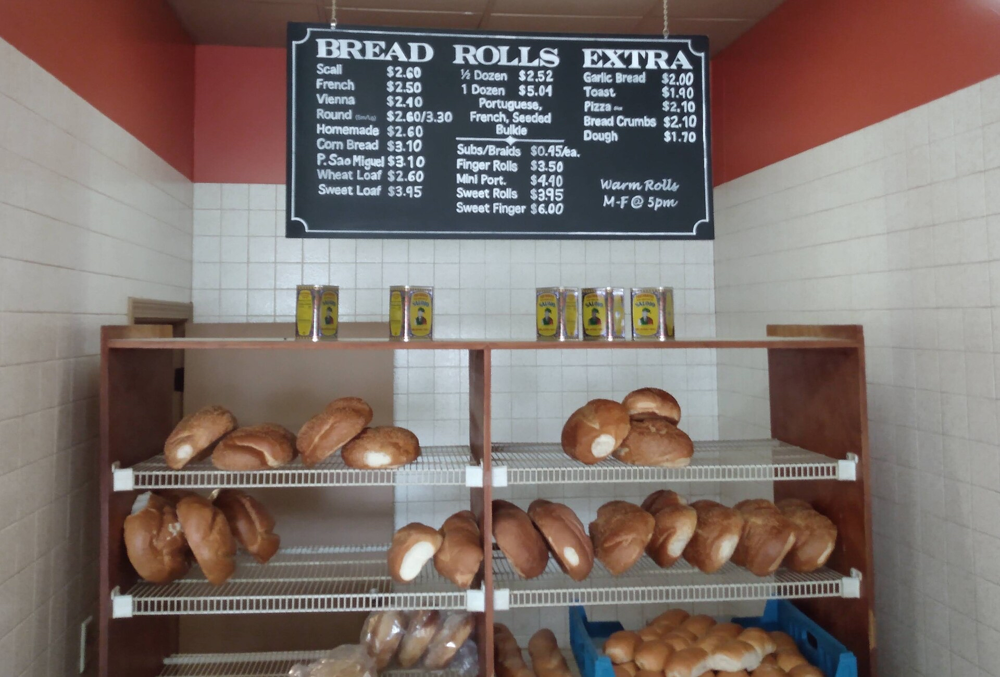

| PIEKARNIA POD DĘBEM chleb na zakwasie od 1998 roku | ||
| Strona główna | Oferta | O nas | Kontakt | ||
 Chleb na zakwasie |
 Bułki i drożdżówki |
 Pieczywo z witryny |
| Piekarnia Pod Dębem to rodzinna piekarnia z Krakowa. Pieczemy codziennie rano, chleb rośnie na własnym zakwasie przez całą noc. Zapraszamy po świeże pieczywo od wtorku do soboty. Zamówienia na większe ilości przyjmujemy dzień wcześniej. Więcej o naszej ofercie kliknij tutaj. | ||
| Napisz do nas | ||
| ul. Przykładowa 5, Kraków | wt.–sob. 6:00–14:00 | Projekt demonstracyjny, firma fikcyjna | ||